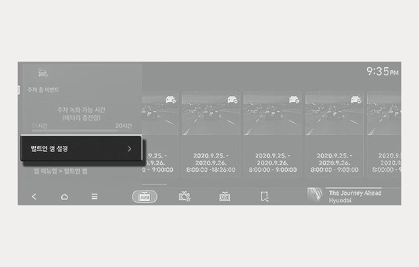
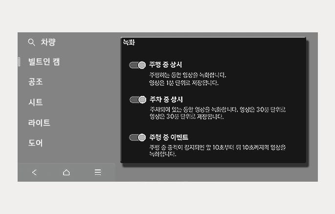
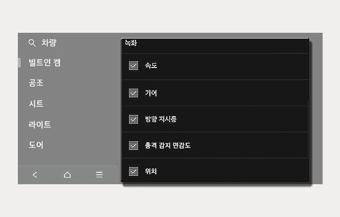
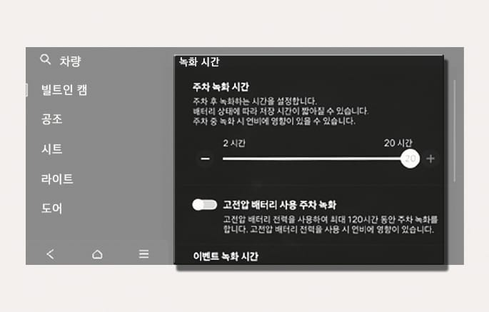
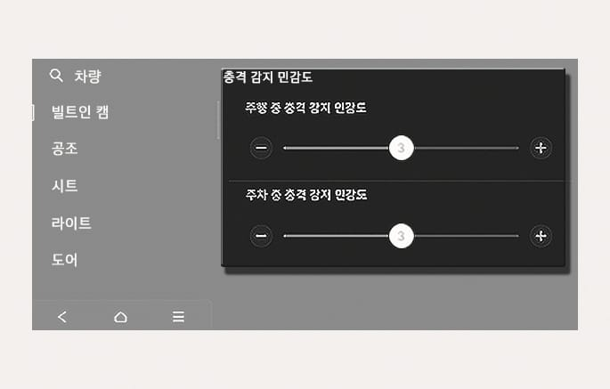
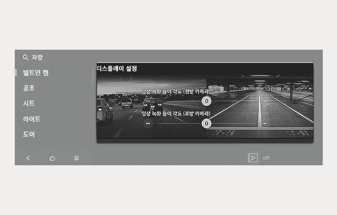
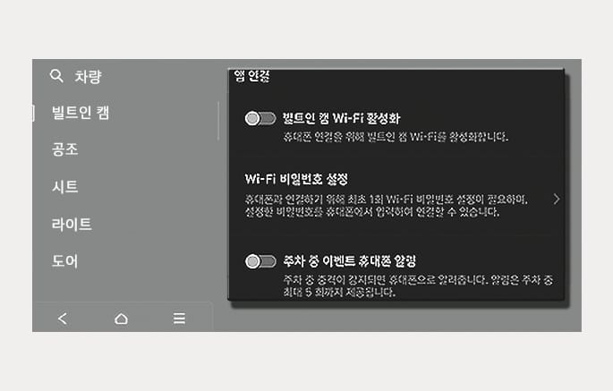
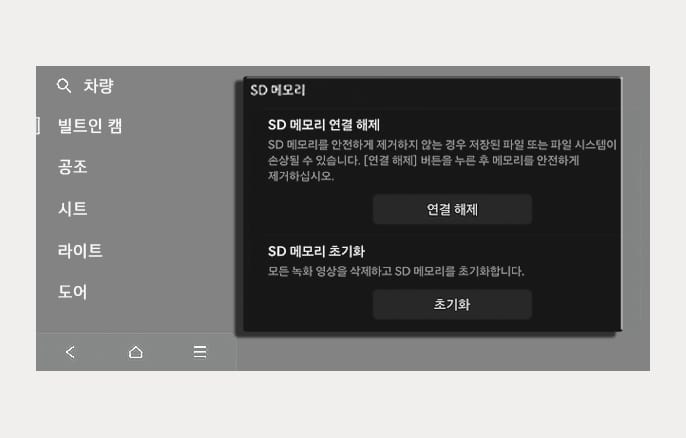

빌트인 캠 설정하기

2C_BuiltinCamSettings
차량의 시동이 'ON'일 때 인포테인먼트 시스템에서 빌트인 캠 > 빌트인 캠 설정을 누른 후 각 항목을 설정하십시오.
-
녹화: 주행 또는 주차 시 녹화 및 음성 녹음 여부, 녹화 영상에 표시할 주행 정보를 설정할 수 있습니다.
-
녹화 시간: 주차 중 녹화 시간, 이벤트 녹화 시간, 타임랩스 녹화 시간 및 간격을 설정할 수 있습니다.
-
충격 감지 민감도: 녹화 기능의 작동 기준이 되는 충격 감지 민감도를 설정할 수 있습니다.
-
디스플레이 설정: 전방/후방 녹화 영상의 높이를 설정할 수 있습니다.
-
앱 연결: Wi-Fi 기능 및 주차 중 이벤트 알림을 설정할 수 있습니다.
-
SD 메모리: 메모리 수명, 단위 위치 등의 정보를 확인하거나 초기화할 수 있으며, SD 메모리 연결을 해제할 수 있습니다.
기본 녹화 설정

2C_BuiltinCamSettings_2
빌트인 캠 > 빌트인 캠 설정 > 녹화를 선택한 후 주행 및 주차 중 녹화 방법과 음성 녹음 여부를 선택하십시오.
주차 중 상시 영상과 타임랩스 영상은 음성 녹음을 지원하지 않습니다.
주행 정보 표시

2C_BuiltInCamRecordingOptions
빌트인 캠 > 빌트인 캠 설정 > 녹화를 선택한 후 주행 정보 표시 항목에서 영상에 표시할 정보를 선택하십시오.
-
시간: 인포테인먼트 시스템에 표시되는 날짜/시간을 저장합니다.
-
속도: 클러스터에 표시되는 차량의 속도를 저장합니다.
-
기어: 클러스터에 표시되는 변속기 위치를 저장합니다.
-
방향지시등: 좌우측 방향지시등 작동 상태를 저장합니다.
-
충격 감지 정도: 빌트인 캠의 충격 감지 센서를 통해 감지된 충격을 5단계로 저장합니다.
-
위치: 내비게이션 지도에 표시되는 차량의 GPS 위치 정보를 저장합니다.
-
법규에 따라 클러스터에 표시되는 속도는 실제 주행 속도보다 높게 표시되므로, 녹화 영상에 기록되는 주행 속도가 클러스터에 표시된 주행속도와 다를 수 있습니다.
-
차량의 위치 및 위성 신호 수신 환경에 따라 정확한 위치 정보가 저장되지 않을 수 있습니다.
-
주행 정보 표시 없이 녹화가 완료된 이후에는 영상에 주행 정보를 다시 표시할 수 없습니다.

2C_BuiltInCamRecordingTime
빌트인 캠 > 빌트인 캠 설정 > 녹화시간을 선택한 후 다음 항목을 설정하십시오.
-
주차 녹화 시간: 주차 후 녹화를 최대 20시간까지 설정할 수 있습니다.
-
이벤트 녹화 시간: 주행 중 충격 감지 시의 녹화 시간을 설정할 수 있습니다.
-
타임랩스 녹화 시간 및 간격: 타입랩스 녹화 시의 녹화 시간 및 간격을 설정할 수 있습니다.
-
고전압 배터리 사용 주차 녹화 기능: 최대 120시간까지 주차 녹화를 실시합니다. 단, 차량 상태에 따라 녹화가 조기 종료될 수 있습니다.
-
이 기능은 활성화하면 1회만 작동합니다. 이후 다음 주차 녹화에도 사용을 원하면 다시 설정을 활성화하십시오.
-
-
빌트인 캠 메뉴의 주차 녹화 가능 시간 메뉴 또는 마이현대 앱(블루링크 가입 필요)에서 12 V 배터리 충전량에 따라 예상되는 녹화 지속 시간을 확인할 수 있습니다.
-
12 V 배터리 충전량이 충분하지 않은 경우 고전압 배터리를 사용해 주차 녹화 기능이 작동합니다.
-
차량 상태에 따라 고전압 배터리를 사용할 수 없는 경우, 설정된 주차 중 녹화 시간이나 예상 주차 녹화 가능 시간 이전에 녹화가 종료될 수 있습니다.

2C_BuiltInCamEventDetectionSensitivity
빌트인 캠 > 빌트인 캠 설정 > 충격 감지 민감도를 누른 후, 1단계(매우 둔감)에서 5단계(매우 민감) 중 민감도 레벨을 선택하십시오.

2C_BuiltInCamDisplaySettings
빌트인 캠 > 빌트인 캠 설정 > 디스플레이 설정을 누른 후, 전방 및 후방 녹화 영상의 높이를 설정하십시오.

2C_BuiltInCamAppConnectionAVN
빌트인 캠 > 빌트인 캠 설정 > 앱 연결을 선택한 후 다음 항목을 설정하십시오.
-
빌트인 캠 Wi-Fi 활성화: 스마트폰 앱 연결에 사용되는 Wi-Fi 기능을 켜거나 끌 수 있습니다.
-
Wi-Fi 비밀번호 설정: 스마트폰 연결에 사용할 비밀번호를 설정할 수 있습니다(숫자, 문자, 특수문자 포함10자 이상).
-
주차 중 이벤트 휴대폰 알림: 주차 중 충격 감지 시 스마트폰 알림 기능을 선택할 수 있습니다(블루링크 가입 필요).
-
스마트폰 앱에서 Wi-Fi 비밀번호를 입력해야 빌트인 캠과 스마트폰을 연결할 수 있습니다.
-
주차 후 스마트폰 알림 횟수가 5회를 초과하는 경우, 알림은 더 이상 발신되지 않지만 녹화 기능은 계속해서 작동합니다.
-
주차 중 이벤트 스마트폰 알림 기능을 사용할 때 차량의 배터리가 소모되므로, 예상했던 주차 녹화 가능 시간 이전에 녹화가 종료될 수 있습니다.

2C_BuiltInCamSDMemory
빌트인 캠 > 빌트인 캠 설정 > SD 메모리를 선택한 후 다음 항목을 설정하십시오.
-
SD 메모리 상태: 메모리 수명 상태를 확인할 수 있습니다.
-
SD 메모리 단자 위치: 메모리 카드 단자 위치를 확인할 수 있습니다.
-
SD 메모리 연결 해제: 차량에서 SD 메모리를 안전하게 제거할 수 있습니다.
-
SD 메모리 초기화: 모든 녹화 영상을 삭제하고 SD 메모리를 초기화합니다.
정품 SD 메모리를 사용하지 않는 경우 수명 상태 정보가 표시되지 않을 수 있습니다.
-
연결 해제 버튼을 누른 후 메모리를 안전하게 제거하십시오. 연결 해제 버튼을 누르지 않고 메모리를 제거하는 경우 저장된 파일이나 파일 시스템이 손상될 수 있습니다.
-
초기화 실행 전 중요한 파일을 백업하십시오. 메모리를 초기화하면 저장된 파일이 모두 삭제됩니다.